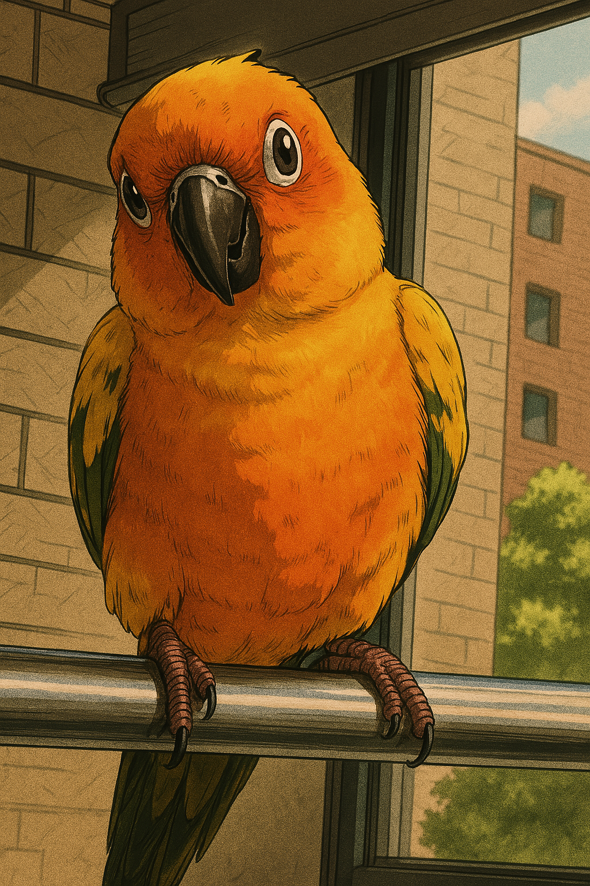

Ant Group: Research Intern at Skyward Lab, working on web3 security, August 2025 ~ November 2025
Huawei HK: Research Intern at Compiler Technologies Lab, June 2025 ~ August 2025
Imperial College London: Visiting Researcher, Sep 2024 ~ Feb 2025
Intel: Compiler Engineer Intern, Feb 2024 ~ Jul 2024
SiliconFlow: AI Framework Development Intern, Dec 2023 ~ Feb 2024
HKUST: PhD Candidate, Sep 2021 ~ Dec 2025 (expected)
Tianjin University: Undergraduate, Aug 2016 ~ Aug 2020
Ma Haoyang
PhD candidate at Hong Kong University of Science and Technology, Castle group.
Visiting researcher at Imperial College London, fastPL group.
My research spans the areas of software engineering, programming languages, and their intersection with AI, including
bug analysis, bug detection, bug localization and LLM-empowered programming.
I'm also interested in translation validation and automated reasoning.
Until now, my collaborator and I have studied over 1000 compiler bugs (including 603 deep learning compiler bugs and 533 Solidity compiler bugs) and detected more than 300 compiler bugs (For instance, Solidity compiler bugs: , ; deep learning compiler bugs: , ).

* indicates co-first authorship.
Conference Paper (Co-) Reviewer: ISSTA '21 '23, AIWare '24, ISSRE' 24, ICSE' 25, FSE '25, ISSTA '25.
Journal Paper Reviewer: TSE
Journal Paper Reviewer: TSE
I was the TA of the following courses.
COMP 3111 Software Engineering (Spring 2021-22)
COMP 2011 Programming With C++ (Fall 2022-23)
COMP 1021 Introduction to Computer Science (Fall 2023-24)
COMP 2011 Programming With C++ (Spring 2024-25)
COMP 3111 Software Engineering (Spring 2021-22)
COMP 2011 Programming With C++ (Fall 2022-23)
COMP 1021 Introduction to Computer Science (Fall 2023-24)
COMP 2011 Programming With C++ (Spring 2024-25)
Jindouyun (筋斗云) Talent Program from ByteDance (2025)
Ant Star Plan A (蚂蚁集团蚂蚁星Plan-A) (2025)
HKUST Postgraduate Studentship (2021-2025)
Research Travel Grant (2023, 2024)
Overseas Research Award (2024)
Ant Star Plan A (蚂蚁集团蚂蚁星Plan-A) (2025)
HKUST Postgraduate Studentship (2021-2025)
Research Travel Grant (2023, 2024)
Overseas Research Award (2024)